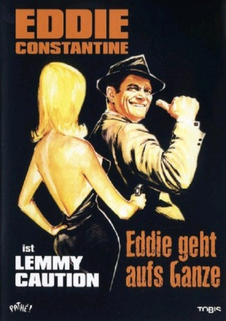

IMDB-Wertung: 5.7 / 10
IMDB-Wertung: 5.7 / 10  Metascore:
Metascore: 
Der Privatdetektiv Lemmy Caution kommt zwei mordenden Agenten auf die Spur und entdeckt, dass diverse Gemälde mit geheimen Spionagecodes versehen wurden.
Alternativ: Women Are Like That (Englischer Titel)
 IMDB-Wertung: 5.7 / 10 Metascore:
Der Privatdetektiv Lemmy Caution kommt zwei mordenden Agenten auf die Spur und entdeckt, dass diverse Gemälde mit geheimen Spionagecodes versehen wurden.
Jahr: 1960
Dauer: 90 Minuten
FSK: 16
Land: Frankreich Studio: Constantin FilmTonspuren:
Untertitel:
Auflösung: SD (640x384) Größe: 699 MB
Regisseur: Bernard Borderie
Drehbuch: Bernard Borderie
Soundtrack:
Darsteller:
Datei: X:\Person\Eddie Constantine\Eddie geht aufs Ganze (1960, FSK16, 640x384).avi seit 05.07.2017
Festplatte: HD Collection-7+mehr(A-Z)+Person
 Es gibt insgesamt 10 Filme in der Gruppe 'Person\Eddie Constantine'
Es gibt insgesamt 10 Filme in der Gruppe 'Person\Eddie Constantine'